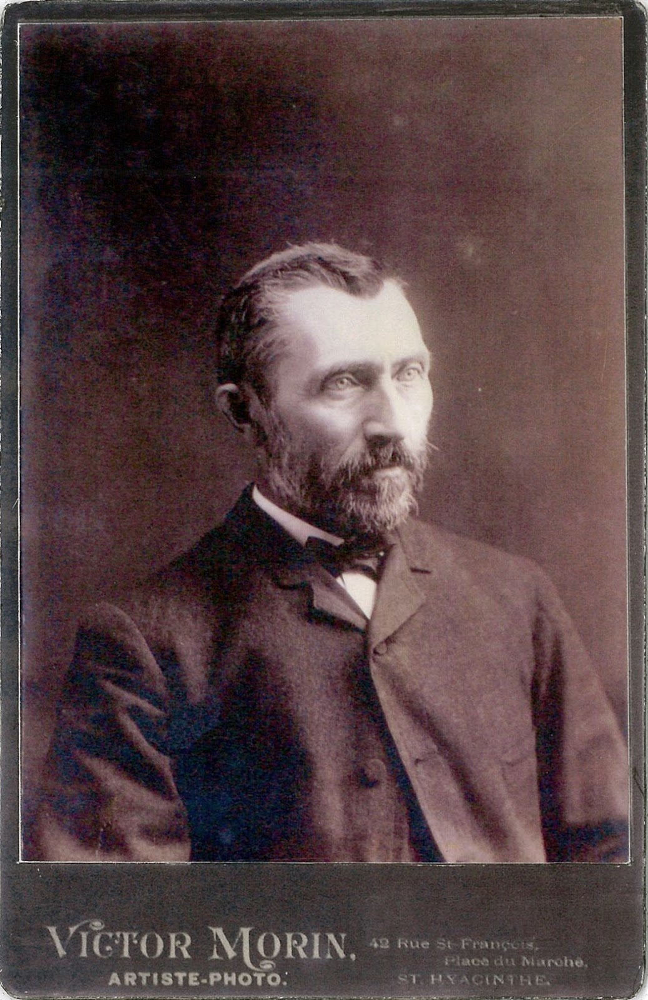

Vincent Van Gogh
b. 1853 - d. 1890 Vincent Willem van Gogh was a Dutch post-impressionist painter who is among the most famous and influential figures in the history of Western art. In just over a decade, he created about 100 artworks, including around 860 oil paintings, most of which date from the last two years of his life. They include landscapes, still lifes, portraits and self-portraits, and are characterised by bold colours and dramatic, impulsive and expressive brushwork that contributed the foundations of modern art. He was not commercially successful, and his suicide at 37 came after years of mental illness, depression and poverty.

Hilma Af Klint
b. 1862 - d. 1944
Hilma af Klint was a Swedish artist and mystic whose paintings were the first Western abstract art known to the current art community. A considerable body of her abstract work predates the first purely abstract compositions by Kandinsky. She belonged to a group called "The Five", a circle of women inspired by Theosophy who shared a belief in the importance of trying to contact the so-called "High Masters"—often by way of séances. Her paintings, which sometimes resemble diagrams, were a visual representation of complex spiritual ideas.
Jasper Johns
b. 1930
Jasper Johns is an American painter, sculptor and printmaker whose work is associated with abstract expressionism, Neo-Dada, and pop art. He is well known for his depictions of the American flag and other US-related topics. Johns' works regularly sell for millions of dollars at sale and auction, including a reported $110 million sale in 2010. At multiple times works by Johns have held the title of most paid for work by a living artist.
Jasper Johns is an American painter, sculptor and printmaker whose work is associated with abstract expressionism, Neo-Dada, and pop art. He is well known for his depictions of the American flag and other US-related topics. Johns' works regularly sell for millions of dollars at sale and auction, including a reported $110 million sale in 2010. At multiple times works by Johns have held the title of most paid for work by a living artist.